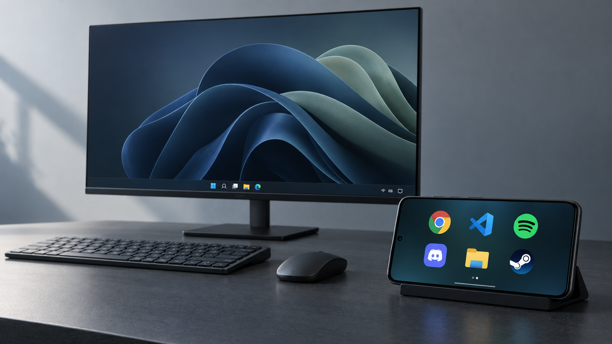

Your apps. Right there.
Chrome, Spotify, your code editor. Pin the Windows apps you use, with their real icons. One tap opens them on your PC.
AN OLD PHONE. A NEW DESK COMPANION.
Your favorite Windows apps, on the phone beside you.
Tap to launch. Swipe to make it yours. Get back to your thing.
Windows + Android · On your Wi-Fi · No account needed
The real interface, with sample apps. Screenshots and recordings here are simulated.
02 / LESS REACHING. MORE DOING.
That phone sitting in a drawer still has a lot to give. Put it next to your keyboard. Give your everyday apps a place of their own.
A second life looks good on it.
Chrome, Spotify, your code editor. Pin the Windows apps you use, with their real icons. One tap opens them on your PC.
Four big icons, or room for eight. Your background, your layout. Hold to rearrange. Swipe over for a fresh page.
Turn the volume down. Skip that song. Pause for a minute. The little controls you reach for, without leaving your work.
Take a screenshot or record your main monitor from the drawer. PNG images and silent MP4 videos, saved straight to your PC.

A DIRECT CONNECTION
Your phone talks directly to your PC over your local network.
Pair with a PIN. No account to create. No cloud in between.
03 / FROM DOWNLOAD TO DESK
A Windows PC. An Android phone.
One shared network. You’re all set.
Open WinDockSetup.exe. The installer takes care of the files and adds WinDock to your Start menu.
Get the Windows appInstall the Android APK. Keep both devices on the same network, then open WinDock and find your PC.
Get the Android appEnter the PIN from Show connection info in the PC tray menu. Turn your phone sideways, swipe up, and pin your favorites.
Need a hand?04 / MAKE SOME ROOM
One companion for your PC. One new job for your phone.
CURRENT RELEASE · 0.1.0Your quiet companion in the system tray.
The whole dock starts here.
Open WinDockSetup.exe and follow the installer. WinDock appears in your Start menu and Windows system tray. Everything it needs is included. Starting with Windows is optional.
The installer is unsigned. Windows may show a publisher warning. Only run a copy you trust. If prompted for network access, allow it on your private home network.
One phone. A whole new workspace.
Made for a sideways point of view.
Download the APK on your Android phone and open it. Android may ask you to allow installation from your browser or file manager.
This is a debug-signed test build, distributed directly rather than through Google Play. Launch it, connect to your PC, and enter the pairing PIN.
A place for your iPhone, too. An iOS companion is planned; no release date yet.
Checking available downloads…
Windows installer: unsigned. Android app: debug-signed. Some focus behavior and hardware controls are still being refined.
SHA-256 checksums05 / GOOD TO KNOW
The Windows companion runs on your PC. On your phone, use the Android app for the fullscreen experience, or open the address shown by the Windows tray in a browser. Both connect to the same dock.
WinDock is made for your local network. Keep your phone and PC on the same trusted network. It doesn’t include an internet remote-access service.
The test app supports Android 7.0 and newer. Update Android System WebView if the interface has trouble loading, then turn the phone sideways for the dock.
Check that WinDock is running in the Windows tray and both devices are on the same network. Open Show connection info and enter that address manually on the phone. Guest Wi-Fi and firewall settings can prevent devices from seeing each other.
Swipe up and open Apps to pin your favorites. New pages appear as you add more than your chosen four, six, or eight icons. Hold to rearrange, and drag an icon to the edge to move it between pages.
Yes. An iOS companion is planned, using the same dock interface and local connection to your Windows PC. It is not available to download yet, and there is no release date.
The Windows installer is unsigned and the Android APK is debug-signed. Both builds have passed automated checks, but Windows focus behavior and some device-specific controls are still being tested. An Android build signed with a different key may require uninstalling the previous one first.